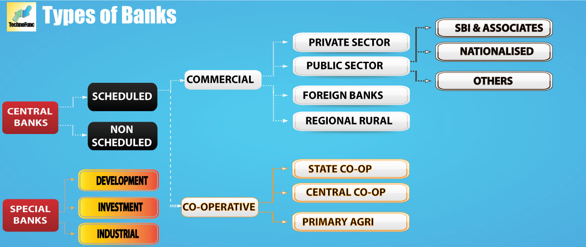

BANKS
A bank is a financial institution that accepts deposits from the public and creates credit.[1] Lending activities can be performed either directly or indirectly through capital markets. Due to their importance in the financial stability of a country, banks are highly regulated in most countries. Most nations have institutionalized a system known as fractional reserve banking under which banks hold liquid assets equal to only a portion of their current liabilities. In addition to other regulations intended to ensure liquidity, banks are generally subject to minimum capital requirements based on an international set of capital standards, known as the Basel Accords.

Channels
- Branch, in-person banking in a retail location.
- Automated teller machine banking adjacent to or remote from the bank
- Bank by mail: Most banks accept cheque deposits via mail and use mail to communicate to their customers
- Online banking over the Internet to perform multiple types of transactions
- Mobile banking is using one's mobile phone to conduct banking transactions
- Telephone banking allows customers to conduct transactions over the telephone with an automated attendant, or when requested, with a telephone operator
- Video banking performs banking transactions or professional banking consultations via a remote video and audio connection. Video banking can be performed via purpose built banking transaction machines (similar to an Automated teller machine) or via a video conference enabled bank branch clarification
- Relationship manager, mostly for private banking or business banking, who visits customers at their homes or businesses
- Direct Selling Agent, who works for the bank based on a contract, whose main job is to increase the customer base for the bank.